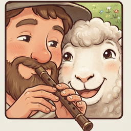
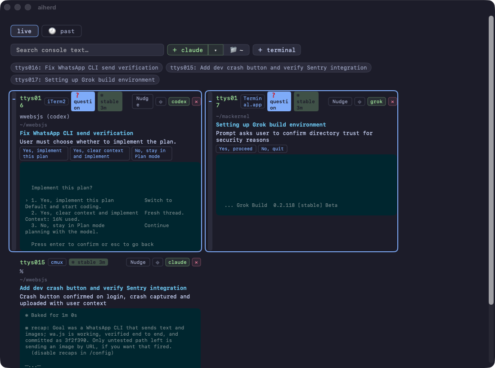
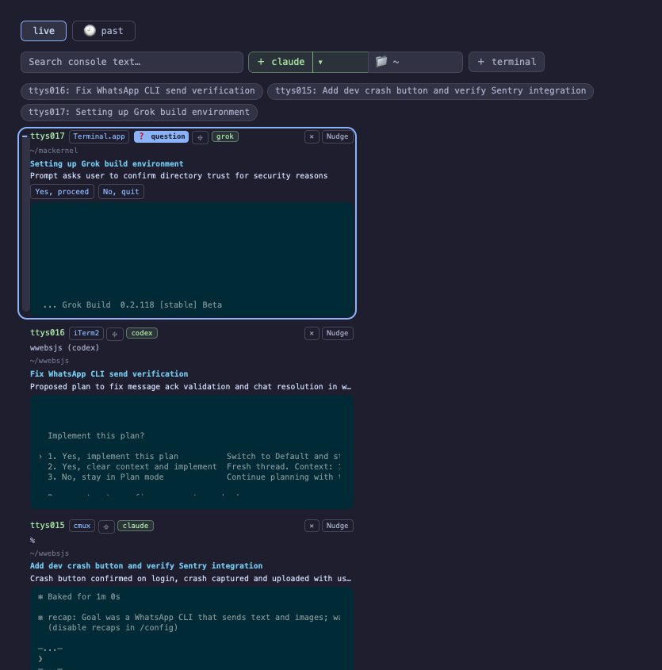
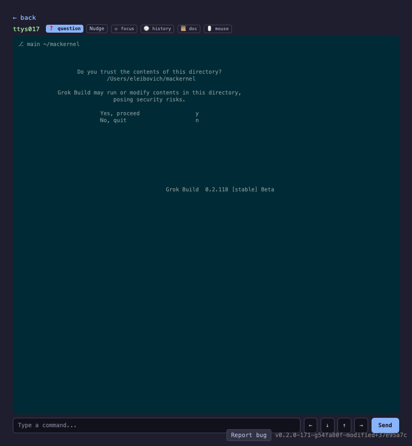
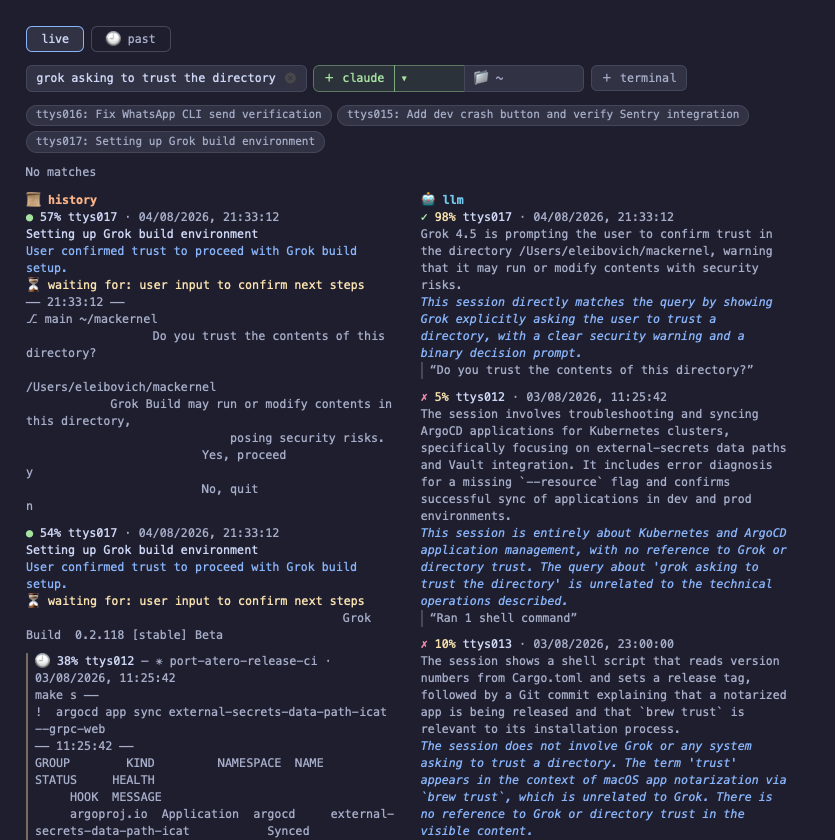
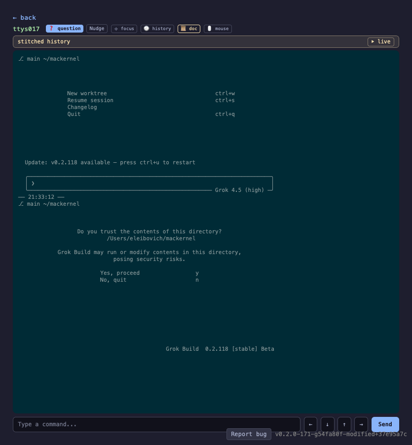
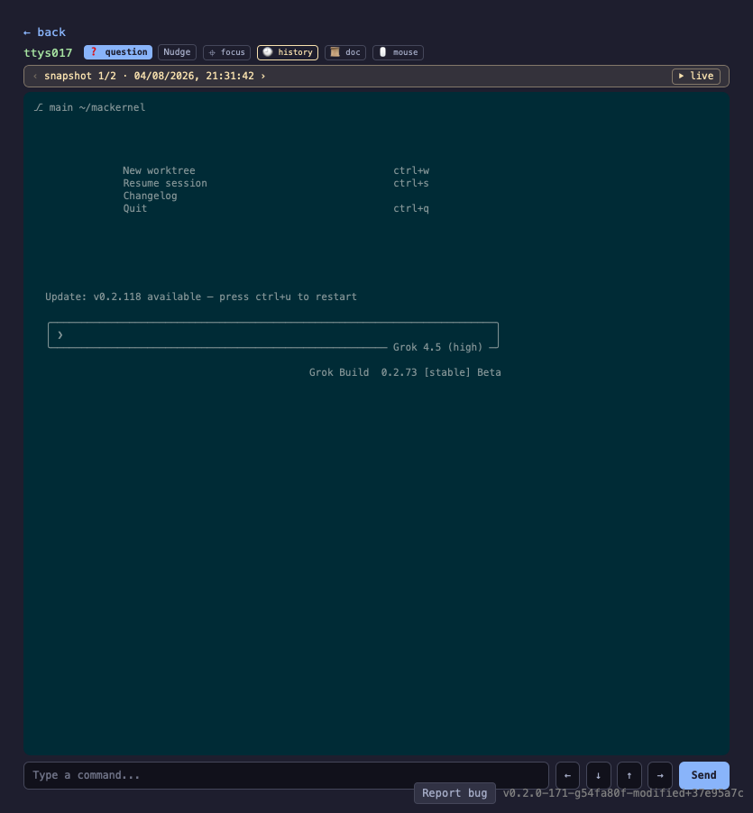

AIHerdYou have six coding agents running in six panes. Five are working and one is blocked on a yes/no question. AIHerd tells you which.
brew install --cask aiherd-dev/aiherd/aiherdmacOS 14 (Sonoma) or newer · Apple Silicon or Intel

One dashboard over every terminal pane on the machine.
AIHerd watches the PTY devices your terminals are attached to, notices which
ones have a CLI coding agent on them — claude, codex,
agy, grok and a dozen others — and reads what is on
each screen. A small classifier compiled into the binary scores every screen for
"is this waiting on a human?", so a pane that has stopped to ask permission
surfaces immediately instead of sitting unnoticed behind three other windows.
It works across terminal programs: iTerm2, Terminal, tmux and cmux panes.
One session, three agents, three different terminal programs:
claude in a cmux pane, codex in iTerm2 and
grok in Terminal.

aih serve -p 8080.
The chips along the top are one line per pane, so you can read the state of
every agent at a glance.



Wheel and clicks go through to the real terminal, so a pane's own TUI responds as if you were sitting in front of it.
↑ scroll sent badge marks each tick that
went through, and claude's own scrollback moves.This one is terminal-specific. cmux forwards mouse events; iTerm2 and Terminal don't, and AIHerd says so on the button rather than letting you click into nothing. Everything else on this page works the same everywhere.
An embedded question classifier scores each screen; panes that are blocked
on a prompt are called out. Nothing is sent anywhere — the model ships inside
the aih binary and runs locally.
Type a reply, send a keypress, scroll, or click straight into any pane from the dashboard. The pane behaves exactly as if you had focused its terminal and typed there, because that is what happens underneath.
Toggle nudging on a pane and AIHerd answers the routine prompts for you, so an agent that would have blocked on a confirmation keeps going.
Once a pane goes quiet, an LLM running in-process writes a
short summary of what happened there. No Python, no uv, no venv:
the model runs inside aih itself, on Metal on Apple Silicon.
Screens are indexed as you work, so you can search months of scrollback by meaning rather than exact string — and jump to the matching point in the stitched history of that pane. The search model is compiled in too.
Pick an agent and a working directory and AIHerd opens a pane for it.
By default AIHerd binds only a Unix socket, so it takes no TCP port at all.
Pass -p 8080 and the same dashboard is available in any browser on
your network.
Open AIHerd.app and it starts aih serve itself over a Unix
socket. Everything below is for driving it from a terminal instead.
aih # serve on the Unix socket (the default)
aih serve -p 8080 # also serve on a TCP port, for a phone or browser
aih serve claude # only panes running a matching executable
aih find-terminals --no-monitor # print the panes AIHerd can see, and their TTYsPass --tty to pin the dashboard to an exact set of panes and
ignore every other terminal on the machine. Useful for a demo or a screenshot,
where you want four known agents on screen and nothing else:
# find the panes you care about
aih find-terminals --no-monitor
# then show only those
aih serve -p 8080 --tty ttys002,ttys004,ttys007,ttys009It takes bare names or /dev/ paths, repeats
(--tty ttys002 --tty ttys004) as well as comma-separated lists, and
overrides pinned panes — so the set you name is exactly the set you get.
Search, summaries and the question list all read the running server over that same Unix socket. So they work while the app is open, take no port, and cost nothing to start — the models are already loaded over there rather than being spun up per command.
aih summaries # what every pane is working on
aih questions # panes waiting on input, with their answer options
aih search "sentry crash" # live screens + history, each with its summary
aih search "sentry crash" --live # only what's on screen right now
aih search "trust prompt" --vector # only stored history, by meaning
aih search "trust prompt" --judge-tty ttys017 # ask the LLM if one pane is relevant, and why
aih summaries --json | jq -r '.[].topic' # --json on any of themPoint any of them at a different server with --url — a socket
path, or http://host:port for one started with -p.
Summaries need Apple Silicon with 16 GB or more. On first use the model
(~2.5 GB) downloads into
~/Library/Application Support/aiherd/models, and the dashboard shows
the progress on the pane that triggered it. Everything else works offline and
without it.
AIHERD_SUMMARIZER | Effect |
|---|---|
off | No LLM at all. |
unsloth/Qwen3-14B-GGUF | A bigger judge. Any Hugging Face GGUF repo works; without a filename, <repo>-Q4_K_M.gguf is assumed. |
unsloth/Qwen3-14B-GGUF:Qwen3-14B-Q5_K_M.gguf | An explicit file in that repo. |
| Path | What |
|---|---|
/Applications/AIHerd.app | Native SwiftUI dashboard, universal binary. |
/usr/local/bin/aih | The CLI. |
brew uninstall --cask aiherd # app, CLI and bundled assets
brew uninstall --zap --cask aiherd # also the text index, settings and logs